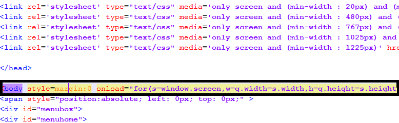
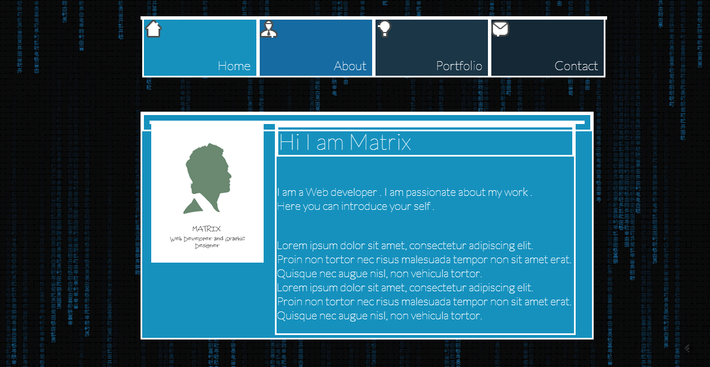
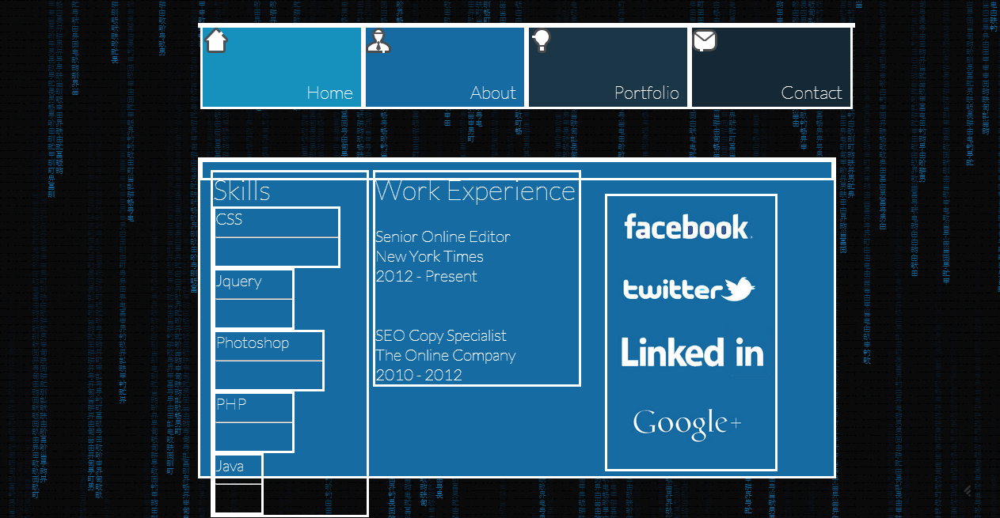
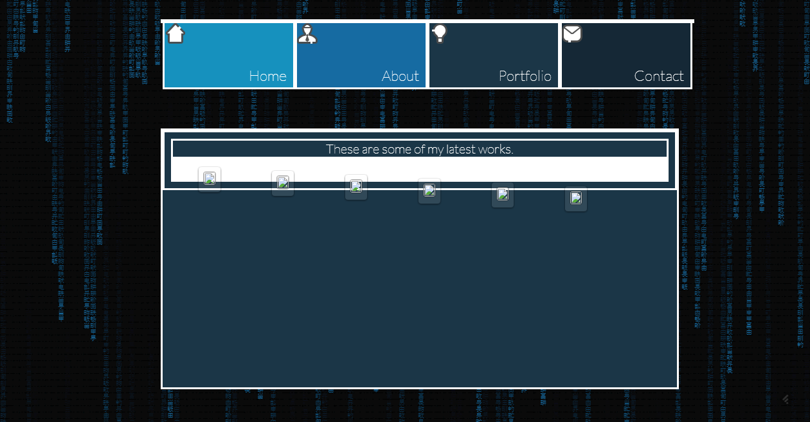
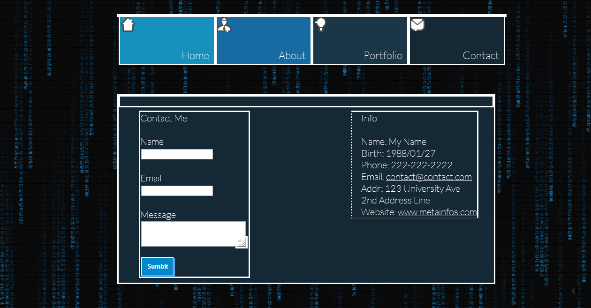

Created: 5/14/2013
By: Sahil Lamba
Email: sahil.lamba@metainfos.com
Thank you for purchasing my theme. If you have any questions that are beyond the scope of this help file, please feel free to email via my user page contact form here. Thanks so much!
This theme is a responsive layout with a fixed background.The matrix style background can be changed very easily by just removing matrix script from body tag in index.html (see image). And include a background image or color property in head section under a style tag (css).

The menu at top is in a div with name "menubox".All of the information within the main content area is nested within a div with an id of "homebox". The general template structure is the same throughout the template. Here is the general structure.The white border specifies the various div that are used the name of div can be found by using Firebug extension in Firefox or Chrome Developer Tools (in built).




As this is a reponsive templete I'm using six CSS files in this theme. The first one is a generic style file which is by defult file. For diffrent devices different css files are rendered so if u make a change in one , make the same change in all to avoid problems.
The css files are labled properly and it will be easy to find and change properties.If you would like to edit a specific section of the site, simply find the appropriate label in the CSS file, and then scroll down until you find the appropriate style that needs to be edited.
This theme imports three Javascript files.
[
$("#menuhome").click(function(){ This function is activated when the menuhome div is clicked
var current_width = $(window).width(); Checks the current width of browser
if(current_width < 479){
$(".homecontent").fadeOut(); Fades out the content of boxes
if (x==1){} Checks if the current box on screen is Home if it is then nothing
if (x==2){ If not then the animation
x=1; makes the variable to check current box to home box.
The animation to send the box
$("#aboutbox").animate({height:"300px",top:"250px",marginLeft:"350px",width:"600px"});
$("#aboutbox").animate({height:"300px",top:"250px",marginLeft:"-650px",width:"600px"},"slow","linear");
The animation to send the box
$("#homebox").delay(1000).animate({height:"600px",top:"250px",marginLeft:"10px",width:"300px"},"slow","linear");
$("#homebox").animate({top:"300px",marginLeft:"10px",width:"400px",height:"800px"},"slow","linear");
}
if (x==3){
x=1;
$("#porfoliobox").animate({height:"300px",top:"250px",marginLeft:"350px",width:"600px"});
$("#porfoliobox").animate({height:"300px",top:"250px",marginLeft:"-650px",width:"600px"},"slow","linear");
$("#homebox").delay(1000).animate({height:"600px",top:"250px",marginLeft:"10px",width:"300px"},"slow","linear");
$("#homebox").animate({top:"300px",marginLeft:"10px",width:"400px",height:"800px"},"slow","linear");
}
if (x==4){
x=1;
$("#contactbox").animate({height:"300px",top:"250px",marginLeft:"350px",width:"600px"});
$("#contactbox").animate({height:"300px",top:"250px",marginLeft:"-650px",width:"600px"},"slow","linear");
$("#homebox").delay(1000).animate({height:"600px",top:"250px",marginLeft:"10px",width:"300px"},"slow","linear");
$("#homebox").animate({top:"300px",marginLeft:"10px",width:"400px",height:"800px"},"slow","linear");
}
$(".homecontent").delay(1000).fadeIn();
}
else if(current_width >= 479 && current_width < 766){ and so on for different sizes
I've used the following images, icons or other files as listed.
Once again, thank you so much for purchasing this theme. As I said at the beginning, I'd be glad to help you if you have any questions relating to this theme. No guarantees, but I'll do my best to assist. If you have a more general question relating to the themes on ThemeForest, you might consider visiting the forums and asking your question in the "Item Discussion" section.
Sahil Lamba